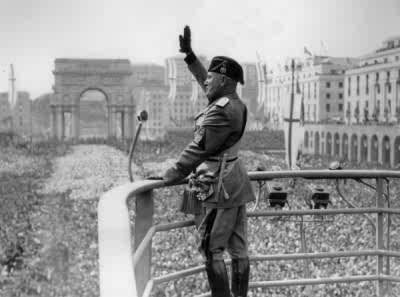

Benito Mussolini 1922
Cine fascista
Cuando estalló la Segunda Guerra Mundial, Italia estaba bajo el dominio de Benito Mussolini, que desde 1922 se mantenía al mando del país. Tal y como ocurría en Alemania por aquella época, toda la producción cinematográfica que se realizó durante el fascismo estuvo controlada por el estado. El Gobierno italiano empleó medios financieros muy importantes para «proteger la industria cinematográfica nacional» y construir Centro Experimental de Cinematografía llamado Cinecittà.